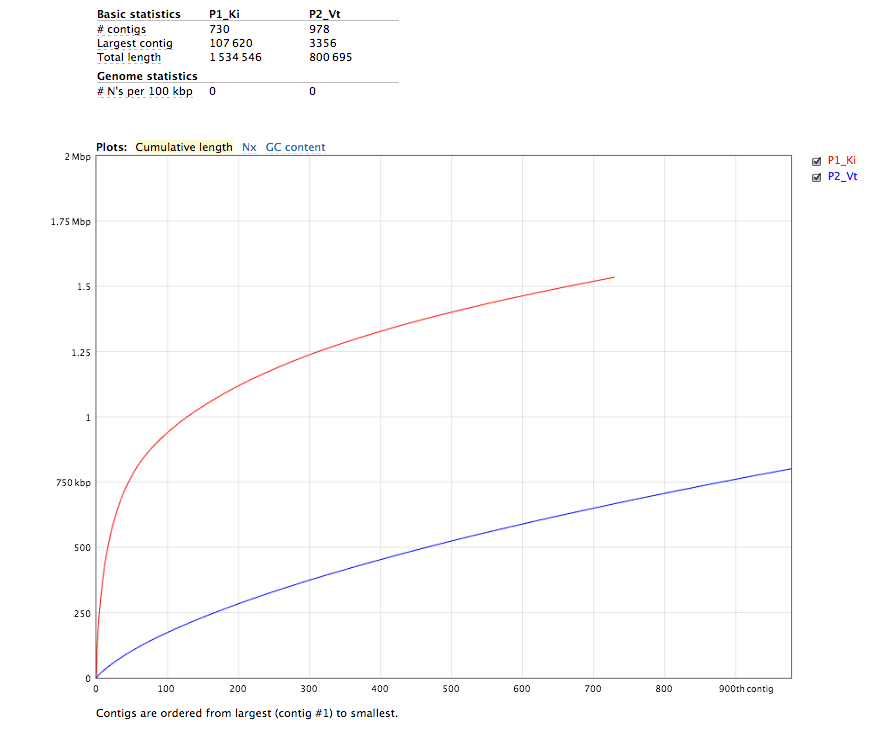

The Assmebly Service currently is only availble through the KBase Download. This service is at an early phase, and supports the following capabilities:
Here we will walk through a couple examples.
Because assembly computation does not provide immediate results, users will need to login using their KBase account.
To login at the command-line, use the ar_login command:File formats supported include fasta and fastq. Compressed files are not yet supported, but we anticipate it will next release (August 2013).ar_loginand to logout,ar_logout
Here we will use a sample metagenome file called se.fastq
wget http://www.mcs.anl.gov/~fangfang/test/se.fastq
ar_run -f se.fastq -a velvet -m "Description of job"
The -a sets the tool to use for assembly. This example shows the use of velvet.
Users can set "-a" to velvet, kiki, a5, or idba
ar_stat -w
Output:
+--------+---------+-----------------------------------------+----------+-------------+ | Job ID | Data ID | Status | Run time | Description | +--------+---------+-----------------------------------------+----------+-------------+ | 83 | 40 | pipeline [success] | 0:22:29 | None | | 92 | 40 | Running: [4%] | 0:00:22 | None | | 93 | 41 | pipeline [success] | 0:00:03 | None | | 94 | 44 | pipeline [success] | 0:22:08 | None | +--------+---------+-----------------------------------------+----------+-------------+
Get assembly data upon completion:
ar_get -j 94
The ar_get command retrieves the job status, "-j" sets what job to look up and the number (in this case 94) is the Job ID.
The assembly service will download 3 files
We will walk through the creation and comparison of two assemblies using Kiki and Velvet. Here we will use sample paired end files called pe_1.fastq and pe_2.fastq
wget http://www.mcs.anl.gov/~fangfang/test/pe_1.fastq wget http://www.mcs.anl.gov/~fangfang/test/pe_2.fastq
Submit the file to be assembled with kiki and velvet:
ar_run --pair pe_1.fastq pe_2.fastq -a kiki velvet -m "Description of job"
Check and monitor the status of your jobs:
ar_stat -w
Output:
+--------+---------+-----------------------------------------+----------+-------------+ | Job ID | Data ID | Status | Run time | Description | +--------+---------+-----------------------------------------+----------+-------------+ | 83 | 40 | pipeline [success] | 0:22:29 | None | | 92 | 40 | Running: [4%] | 0:00:22 | None | | 93 | 41 | pipeline [success] | 0:00:03 | None | | 94 | 44 | pipeline [success] | 0:22:08 | None | | 95 | 44 | Running: [50%] | 0:00:08 | Test | +--------+---------+-----------------------------------------+----------+-------------+
Get assembly data upon completion:
ar_get -j 95
Once again, the assembly service will download 3 files:
Look at QUAST analysis by extracting the analysis archive:
mkdir results tar -xf 95_analysis.tar.gz -C results/ cat results/report.txtmkdir makes a directory, in this case, called results the .tar.gz file is compressed and archived file. tar -xf uncompresses and extracts the files, "-C" moves the extracted files into your new directory "results".
Output:
Assembly P1_Ki P2_Vt # contigs (>= 0 bp) 6579 12317 # contigs (>= 1000 bp) 309 190 Total length (>= 0 bp) 2698557 2573302 Total length (>= 1000 bp) 1246799 273827 # contigs 730 978 Largest contig 107620 3356 Total length 1534546 800695 GC (%) 40.84 41.95 N50 4999 806 N75 1275 617 # N's per 100 kbp 0.00 0.00
Or open report.html for visualizations:
